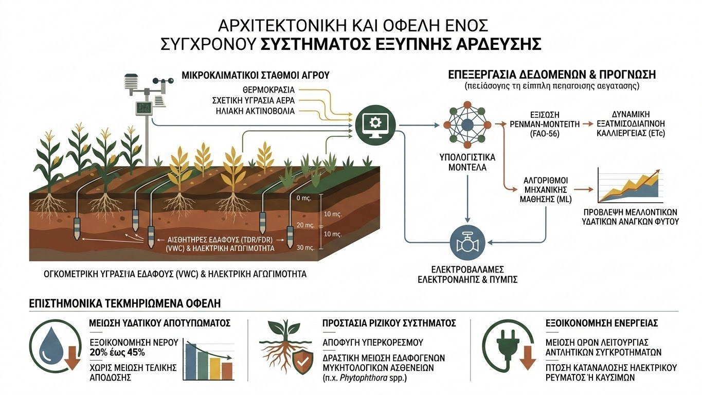
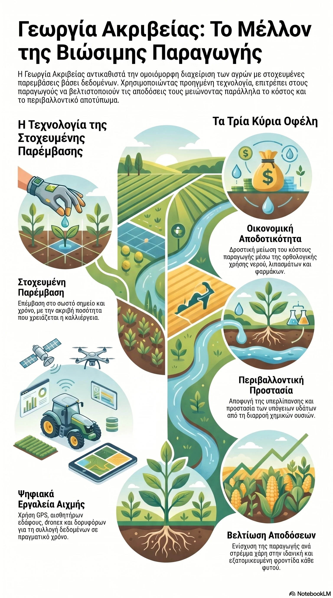
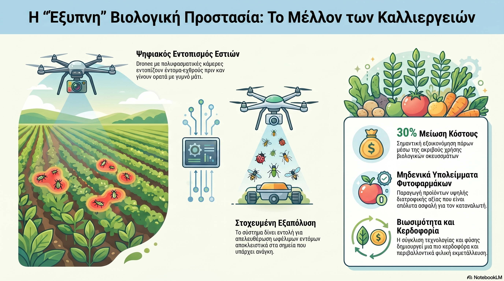

Επιστημονικό Άρθρο
Έξυπνη Άρδευση: Η Σύγκλιση IoT και Επιστήμης Δεδομένων στη Βιώσιμη Γεωργία
Η κλιματική αλλαγή και η εξάντληση των υδάτινων πόρων επιβάλλουν τη μετάβαση από τα παραδοσιακά προγράμματα ποτίσματος σε δυναμικά συστήματα λήψης αποφάσεων βάσει δεδομένων...
Διαβάστε το άρθρο

Άρθρο
Γεωργία Ακριβείας: Η Ψηφιακή Επανάσταση που Μεταμορφώνει τα Χωράφια μας
Η παραδοσιακή γεωργία, βασισμένη στην ομοιόμορφη διαχείριση ολόκληρων αγροτεμαχίων, δίνει σταδιακά τη θέση της σε μια νέα, έξυπνη προσέγγιση...
Διαβάστε το άρθρο

Άρθρο
"Έξυπνη" Βιολογική Προστασία – Το Μέλλον των Καλλιεργειών
Η παραδοσιακή καταπολέμηση εχθρών και ασθενειών βασιζόταν συχνά σε προληπτικούς ψεκασμούς. Όμως, ένα νέο μοντέλο συνδυάζει πλέον την Τεχνητή Νοημοσύνη (AI) με τη Βιολογική Καταπολέμηση...
Διαβάστε το άρθρο